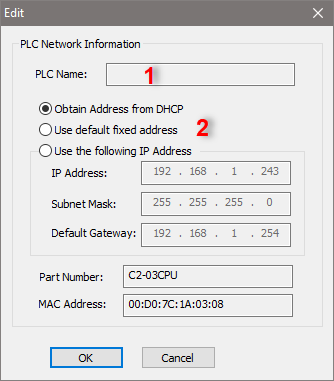

Topic: CL200

| Connect to CLICK PLC (Ethernet): In the same LAN |
Topic: CL200
|
The easy-to-use Connect to PLC dialog is one of the most crucial parts of the CLICK Programming Software. This dialog establishes the link between the programming software and the PLC.

1 Port Type: Select the Port Type of the communication port on your PC to connect to the target CLICK CPU Module.
2 Network Adapter: Select the Network Adapter installed on your PC.
3 Location of the Target CLICK PLC: There are two choices.
| In the same LAN | Select this option if the target CLICK PLC locates in the same LAN. |
| Outside this LAN | Select this option if the target CLICK PLC locates outside this LAN or you want to access to the target CLICK PLC via Internet. |
4 List of CLICK PLCs: The CLICK Programming Software automatically searches the CLICK PLCs in the same LAN and displays here. Icons to the right indicate whether each selection is using the PLC's wired or wireless network connection. If another user is connected to a CLICK on this network, the Connection Column will indicate "Busy"
5 Refresh: By clicking this button, the CLICK Programming Software searches the CLICK PLCs in the same LAN again and updates the list.
6 Blink RUN & ERR LEDs: After selecting a CLICK PLC in the above list, the CLICK PLC turns ON and OFF the RUN and ERR LED indicators alternatively by clicking this button.
7 Edit: After selecting a CLICK PLC in the above list, the Edit window to Edit the Network Address setup pops up.
In this window, you can Edit the Network Address of the CLICK PLC.

1 PLC Name: This is reference only. You can't Edit the PLC Name in this dialog. To Edit the PLC Name, you need to connect the CLICK ProgrammingSoftware to the target PLC first, then Edit the PLC Name in the System Configuration window.
2 Obtain Address from DHCP / Use Default Fixed Address / Set Manually: By default, the CLICK Ethernet CPU modules will use DHCP to request network settings from your router. If you choose not to use DHCP, all of the CLICK Ethernet CPU modules use the following default fixed Network Address. By selecting the Set Manually option, you can Edit the Network Address. These options are discussed more fully in Network Address Configuration.
[Default Network Address]
IPAddress: 192.168.0.10 (wired) or 192.168.0.11 (wireless)
Subnet Mask: 255.255.0.0
Default Gateway: 0.0.0.0